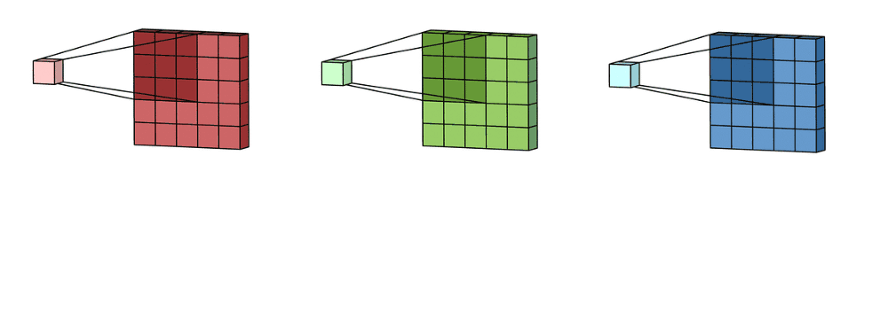
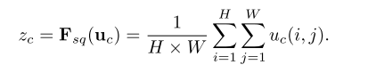
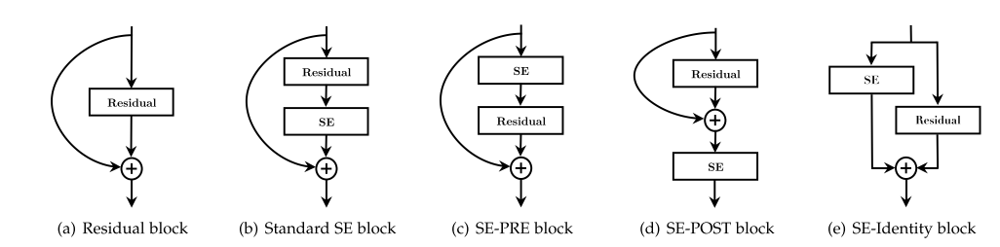

Squeeze and Excitation Networks Explained with PyTorch Implementation
Squeeze-and-Excitation Networks
In this blogpost, we re-implement the Squeeze-and-Excitation networks in PyTorch step-by-step with very minor updates to ResNet implementation in torchvision.
1 Introduction
In this blog post, we will be looking at the Squeeze-and-Excitation networks. We will refer to the research paper by Hu et al and first understand what Squeeze-and-Excitation networks are before implementing the novel architecture in PyTorch with very few modifications to the popular ResNet architecture.
First, we develop an intuition for what SE-Nets are and the novel idea behind their success. Next, we will look at the Squeeze and Excitation operations in a little more detail. Finally, we implement the Squeeze-and-Excitation networks in PyTorch with very minor updates to ResNet implementation in torchvision.
2 Intuition behind Squeeze-and-Excitation Networks
So, what’s new in the Squeeze-and-Excitation networks? How are they different from the ResNet architecture?
Let’s consider an RGB image as an input. Then the convolution operation with a 3x3 kernel on the input image can be visualised as below:

A feature map is generated per-channel (RGB) and then summed together to form one channel or the final output of the convolution operation as below:

Implicitly, the convolution kernel would have different weights for different channels and these are learned weights through backpropagation. If it’s an RGB image, then generally the kernels are also cubic to map channel dependencies.
2.1 Main Idea behind Se-Nets:
We expect the learning of convolutional features to be enhanced by explicitly modelling channel interdependencies, so that the network is able to increase its sensitivity to informative features which can be exploited by subsequent transformations. Consequently, we would like to provide it with access to global information and recalibrate filter responses in two steps, squeeze and excitation, before they are fed into the next transformation.
In other words, with the squeeze-and-excitation block, the neural nets are better able to map the channel dependency along with access to global information. Therefore, they are better able to recalibrate the filter outputs and thus, this leads to performance gains.

This main idea can be further explained using the Squeeze-and-Excitation block image above from the paper. First, a feature transformation (such as a convolution operation) is performed on the input image X to get features U. Next, we perform a squeeze operation to get a single value for each channel of output U. After, we perform an excitation operation on the output of the squeeze operation to get per-channel weights.
Finally, once we have the per-channel weights, the final output of the block is obtained by rescaling the feature map U with these activations.
From the paper: > The role this operation performs at different depths differs throughout the network. In earlier layers, it excites informative features in a class-agnostic manner, strengthening the shared low-level representations. In later layers, the SE blocks become increasingly specialised, and respond to different inputs in a highly class-specific manner. As a consequence, the benefits of the feature recalibration performed by SE blocks can be accumulated through the network.
Next, we will look at the Squeeze and Excitation operations in a little more detail.
3 Squeeze: Global Information Embedding
The main purpose of the Squeeze operation is to extract global information from each of the channels of an image. Since, convolution is a local operation (that is, at a particular time, it is only able to see a part of the image), it might be beneficial to also extract information outside the receptive field of the convolution filter.
The Squeeze operation is meant to do exactly that and the authors keep it as simple as possible.
The authors perform a Global Average Pooling operation to reduce the C x H x W image to C x 1 x 1 to get a global statistic for each channel.
Formally, the Global Average Pooling or the Squeeze operation can be formally represented as:

In other words, all we do is that we take the mean of each channel across H x W spatial dimensions.
4 Excitation: Adaptive Recalibration
Now that we have a vector of length C from the Squeeze operation, the next step is to generate a set of weights for each channel. This is done with the help of Excitation operation explained in this section.
Formally, the excitation operation can be represented by:

where:
- δ refers to ReLU operation
- σ refers to Sigmoid operation
- W1 and W2 are two fully-connected layers
- z is the output from the Squeeze block
The two FC layers form a bottleneck architecture, that is, the first W1 layer is used for dimensionality reduction by a ratio r and the second W2 layer is a dimensionality increasing layer returning to the channel dimension of U.
Since, the Sigmoid layer would return numbers between 0 and 1, these are the channel weights and the final output of the block can be respresented as:

From the paper: > The excitation operator maps the input-specific descriptor z to a set of channel weights. In this regard, SE blocks intrinsically introduce dynamics conditioned on the input, which can be regarded as a self-attention function on channels whose relationships are not confined to the local receptive field the convolutional filter are responsive to.
The authors in the paper also mentioned the thinking and reasoning behind coming up with this excitation function. They write: > To make use of the information aggregated in the squeeze operation, we follow it with a second operation which aims to fully capture channel-wise dependencies. To fulfil this objective, the function must meet two criteria: first, it must be flexible (in particular, it must be capable of learning a nonlinear interaction between channels) and second, it must learn a non-mutually-exclusive relationship since we would like to ensure that multiple channels are allowed to be emphasised.
That is why using a Sigmoid layer makes so much sense rather than Softmax(which would generally impose importance on only one of the channels). A Sigmoid function (which is also used in multi-label classification) allows multiple channels to have higher importance.
5 Squeeze and Excitation Block in PyTorch
class SE_Block(nn.Module):
"credits: https://github.com/moskomule/senet.pytorch/blob/master/senet/se_module.py#L4"
def __init__(self, c, r=16):
super().__init__()
self.squeeze = nn.AdaptiveAvgPool2d(1)
self.excitation = nn.Sequential(
nn.Linear(c, c // r, bias=False),
nn.ReLU(inplace=True),
nn.Linear(c // r, c, bias=False),
nn.Sigmoid()
)
def forward(self, x):
bs, c, _, _ = x.shape
y = self.squeeze(x).view(bs, c)
y = self.excitation(y).view(bs, c, 1, 1)
return x * y.expand_as(x)As mentioned the Squeeze operation is a global Average Pooling operation and in PyTorch this can be represented as nn.AdaptiveAvgPool2d(1) where 1, represents the output size.
Next, the Excitation network is a bottle neck architecture with two FC layers, first to reduce the dimensions and second to increase the dimensions back to original. We reduce the dimensions by a reduction ratio r=16. This is as simple as creating a nn.Sequential with two FC layers, with a nn.ReLU() in between and followed by a nn.Sigmoid().
The outputs of the Excitation operation are the channel weights which are then multiplied element-wise to input feature X to get the final output of the SE_Block.
6 SE Block with Existing SOTA Architectures
From the paper: > The structure of the SE block is simple and can be used directly in existing state-of-the-art architectures by replacing components with their SE counterparts, where the performance can be effectively enhanced. SE blocks are also computationally lightweight and impose only a slight increase in model complexity and computational burden.
In other words, it is really simple to integrate SE blocks with existing state-of-art architectures. The authors provide two examples for SE-ResNet and SE-Inception as below:

In this blogpost we will implement the SE-ResNet architecture and the SE-Inception architecture is left as an exercise to the reader.
The authors experimented by inserting SE block in various positions and found that the performance improvements produced by SE units are fairly robust to their location, provided that they are applied prior to branch aggregation. In this post, we will construct a SE-ResNet architecture using the Standard SE block integration as below:

Key point to note: > As can be seen from the Standard SE block (b) integration, the SE block is preceded directly by the Residual operation in ResNet before summation with the identity branch.
7 SE-ResNet in PyTorch
As we saw from fig-6, we simply insert the SE block after the Residual operation. To create SE-Resnet34 and below, we simply copy the BasicBlock from torchvision from here.
class BasicBlock(nn.Module):
expansion = 1
def __init__(self, inplanes, planes, stride=1, downsample=None, groups=1,
base_width=64, dilation=1, norm_layer=None):
super(BasicBlock, self).__init__()
if norm_layer is None:
norm_layer = nn.BatchNorm2d
if groups != 1 or base_width != 64:
raise ValueError('BasicBlock only supports groups=1 and base_width=64')
if dilation > 1:
raise NotImplementedError("Dilation > 1 not supported in BasicBlock")
# Both self.conv1 and self.downsample layers downsample the input when stride != 1
self.conv1 = conv3x3(inplanes, planes, stride)
self.bn1 = norm_layer(planes)
self.relu = nn.ReLU(inplace=True)
self.conv2 = conv3x3(planes, planes)
self.bn2 = norm_layer(planes)
self.downsample = downsample
self.stride = stride
def forward(self, x):
identity = x
out = self.conv1(x)
out = self.bn1(out)
out = self.relu(out)
out = self.conv2(out)
out = self.bn2(out)
if self.downsample is not None:
identity = self.downsample(x)
out += identity
out = self.relu(out)
return outNext, we update the forward to insert the SE block operation as in fig-6:
class SEBasicBlock(nn.Module):
expansion = 1
def __init__(self, inplanes, planes, stride=1, downsample=None, groups=1,
base_width=64, dilation=1, norm_layer=None, r=16):
super(SEBasicBlock, self).__init__()
if norm_layer is None:
norm_layer = nn.BatchNorm2d
if groups != 1 or base_width != 64:
raise ValueError('BasicBlock only supports groups=1 and base_width=64')
if dilation > 1:
raise NotImplementedError("Dilation > 1 not supported in BasicBlock")
# Both self.conv1 and self.downsample layers downsample the input when stride != 1
self.conv1 = conv3x3(inplanes, planes, stride)
self.bn1 = norm_layer(planes)
self.relu = nn.ReLU(inplace=True)
self.conv2 = conv3x3(planes, planes)
self.bn2 = norm_layer(planes)
self.downsample = downsample
self.stride = stride
# add SE block
self.se = SE_Block(planes, r)
def forward(self, x):
identity = x
out = self.conv1(x)
out = self.bn1(out)
out = self.relu(out)
out = self.conv2(out)
out = self.bn2(out)
# add SE operation
out = self.se(out)
if self.downsample is not None:
identity = self.downsample(x)
out += identity
out = self.relu(out)
return outAnd that’s it! As easy as it may sound, we have just implemented the SEBasicBlock in PyTorch.
Next, for ResNet-50 and above, we perform the same steps for Bottleneck architecture. First, we copy the Bottleneck class from torchvision.
class Bottleneck(nn.Module):
# Bottleneck in torchvision places the stride for downsampling at 3x3 convolution(self.conv2)
# while original implementation places the stride at the first 1x1 convolution(self.conv1)
# according to "Deep residual learning for image recognition"https://arxiv.org/abs/1512.03385.
# This variant is also known as ResNet V1.5 and improves accuracy according to
# https://ngc.nvidia.com/catalog/model-scripts/nvidia:resnet_50_v1_5_for_pytorch.
expansion = 4
def __init__(self, inplanes, planes, stride=1, downsample=None, groups=1,
base_width=64, dilation=1, norm_layer=None):
super(Bottleneck, self).__init__()
if norm_layer is None:
norm_layer = nn.BatchNorm2d
width = int(planes * (base_width / 64.)) * groups
# Both self.conv2 and self.downsample layers downsample the input when stride != 1
self.conv1 = conv1x1(inplanes, width)
self.bn1 = norm_layer(width)
self.conv2 = conv3x3(width, width, stride, groups, dilation)
self.bn2 = norm_layer(width)
self.conv3 = conv1x1(width, planes * self.expansion)
self.bn3 = norm_layer(planes * self.expansion)
self.relu = nn.ReLU(inplace=True)
self.downsample = downsample
self.stride = stride
def forward(self, x):
identity = x
out = self.conv1(x)
out = self.bn1(out)
out = self.relu(out)
out = self.conv2(out)
out = self.bn2(out)
out = self.relu(out)
out = self.conv3(out)
out = self.bn3(out)
if self.downsample is not None:
identity = self.downsample(x)
out += identity
out = self.relu(out)
return outNext, we add the SE_Block operation similar to what we did for the BasicBlock as below:
class SEBottleneck(nn.Module):
# Bottleneck in torchvision places the stride for downsampling at 3x3 convolution(self.conv2)
# while original implementation places the stride at the first 1x1 convolution(self.conv1)
# according to "Deep residual learning for image recognition"https://arxiv.org/abs/1512.03385.
# This variant is also known as ResNet V1.5 and improves accuracy according to
# https://ngc.nvidia.com/catalog/model-scripts/nvidia:resnet_50_v1_5_for_pytorch.
expansion = 4
def __init__(self, inplanes, planes, stride=1, downsample=None, groups=1,
base_width=64, dilation=1, norm_layer=None, r=16):
super(SEBottleneck, self).__init__()
if norm_layer is None:
norm_layer = nn.BatchNorm2d
width = int(planes * (base_width / 64.)) * groups
# Both self.conv2 and self.downsample layers downsample the input when stride != 1
self.conv1 = conv1x1(inplanes, width)
self.bn1 = norm_layer(width)
self.conv2 = conv3x3(width, width, stride, groups, dilation)
self.bn2 = norm_layer(width)
self.conv3 = conv1x1(width, planes * self.expansion)
self.bn3 = norm_layer(planes * self.expansion)
self.relu = nn.ReLU(inplace=True)
self.downsample = downsample
self.stride = stride
# Add SE block
self.se = SE_Block(planes, r)
def forward(self, x):
identity = x
out = self.conv1(x)
out = self.bn1(out)
out = self.relu(out)
out = self.conv2(out)
out = self.bn2(out)
out = self.relu(out)
out = self.conv3(out)
out = self.bn3(out)
# Add SE operation
out = self.se(out)
if self.downsample is not None:
identity = self.downsample(x)
out += identity
out = self.relu(out)
return outThat’s it! Now that we have implemented SEBasicBlock and SEBottleneck in PyTorch, we are ready to construct SE-ResNet architectures. As was mentioned in the paper,
The structure of the SE block is simple and can be used directly in existing state-of-the-art architectures by replacing components with their SE counterparts, where the performance can be effectively enhanced.
Let’s do exactly this. We simply replace the components of ResNet architecture with the SE counterparts.
But, one last step is to copy some helper functions from torchvision. These functions are present here:
def conv3x3(in_planes, out_planes, stride=1, groups=1, dilation=1):
"""3x3 convolution with padding"""
return nn.Conv2d(in_planes, out_planes, kernel_size=3, stride=stride,
padding=dilation, groups=groups, bias=False, dilation=dilation)
def conv1x1(in_planes, out_planes, stride=1):
"""1x1 convolution"""
return nn.Conv2d(in_planes, out_planes, kernel_size=1, stride=stride, bias=False)
def _resnet(arch, block, layers, pretrained, progress, **kwargs):
model = ResNet(block, layers, **kwargs)
return model7.1 SEResNet-18
From torchvision here, we update the implementation of resnet18 to get se_resnet18:
def se_resnet18(pretrained=False, progress=True, **kwargs):
return _resnet('resnet18', SEBasicBlock, [2, 2, 2, 2], pretrained, progress,
**kwargs)7.2 SEResNet-34
From torchvision here, we update the implementation of resnet34 to get se_resnet34:
def se_resnet34(pretrained=False, progress=True, **kwargs):
return _resnet('resnet34', SEBasicBlock, [3, 4, 6, 3], pretrained, progress,
**kwargs)7.3 SEResNet-50
From torchvision here, we update the implementation of resnet50 to get se_resnet50:
def se_resnet50(pretrained=False, progress=True, **kwargs):
return _resnet('resnet50', SEBottleneck, [3, 4, 6, 3], pretrained, progress,
**kwargs)7.4 SEResNet-101
From torchvision here, we update the implementation of resnet101 to get se_resnet101:
def se_resnet101(pretrained=False, progress=True, **kwargs):
return _resnet('resnet101', SEBottleneck, [3, 4, 23, 3], pretrained, progress,
**kwargs)8 Conclusion
In this blogpost, first, we looked at what SE blocks are and the novel idea that they introduce. Next, we looked at the Squeeze and Excitation operation that is used to generate per-channel weights which are then used to return the final output of the SE block.
Finally, we looked at integration of SE block in the ResNet architecture to construct se_resnet18, se_resnet34, se_resnet50 and se_resnet101.
I hope that my explaination of SE Blocks was clear and as always - constructive feedback is always welcome at @amaarora.
Also, feel free to subscribe to receive regular updates regarding new blog posts. Thanks for reading!
9 Credits
The implementation of SE_Block has been adapted from senet.pytorch repo here.
Also, thanks to my friends - Atmadeep Banerjee and Akash Palrecha - both research interns at Harvard - for proof reading the draft version of this blog post and providing me with an honest and constructive feedback.
Both Akash and Atmadeep found a technical error in my blog in the main idea behind SENet section where I had skipped the part that channel-dependencies are implicitly present when performing a convolution operation. Also, they helped me make this section better by helping me further improve my understanding of SeNets.
Akash, was also very kind to point out a grammatical error and also it was his suggestion to add the two reasons mentioned in the paper for choosing the excitation function.
Both Akash and Atmadeep helped me in making this blog post better and more accurate. Thanks guys!